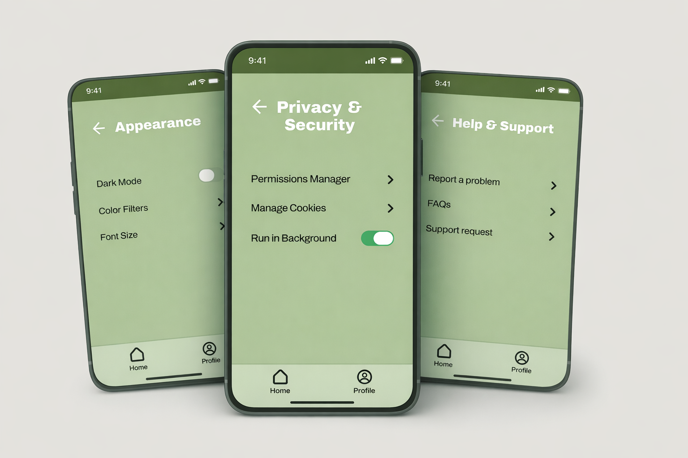

Case Studies
A small set of end-to-end projects showing how I approach real problems through research, UX thinking, and clean, practical design.
Case Study Structure
What each case study covers
Each case study walks through a real design problem from start to finish — from defining the problem and research to designing solutions and validating outcomes.
The focus is on decision-making, tradeoffs, and how design choices connect back to real user needs.
Problem & context
Clear definition of the problem, users involved, and constraints that shaped the work.
Design solutions
Flows, wireframes, and UI decisions — with reasoning behind what changed and why.
Research & insights
Key findings, patterns, and observations that informed design decisions.
Validation & outcomes
What was tested, what improved, and what the results revealed.
Projects
Work that matters
Each project highlights a real design problem, the decisions behind it, and what changed as a result.
